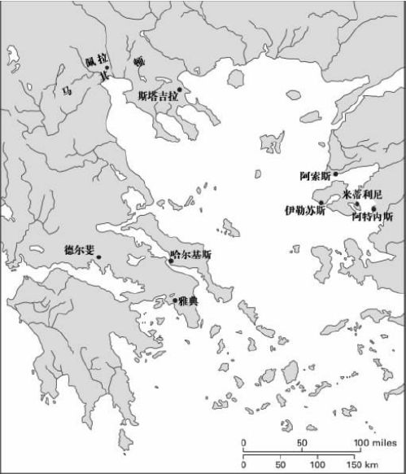
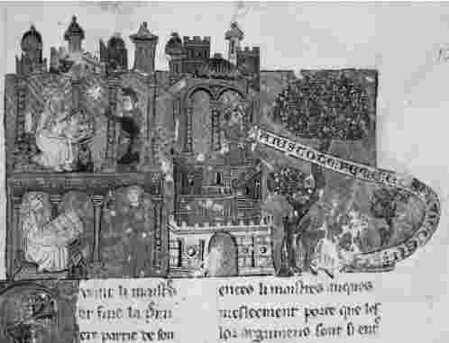

亚里士多德不是隐者：他所推崇的沉思冥想不是躺在扶手椅里或窝在象牙塔里进行的。他从未从政，但却是个公众人物，经常实足地生活在公众的视野里。不过，公元前322年春，他隐居到哈尔基斯的埃维亚岛，在那里有他母亲家族的财产；在生命的最后几个月，他为自己的孤独而感到悲伤。
之前的十三年，他住在希腊的文化之都雅典。在雅典期间，他定期地在吕克昂 [1] （Lyceum）教课。因为他认为知识和教书是不可分割的。他自己的研究经常与他人以研究小组的形式一起完成；他将自己的研究结果与朋友和学生交流，从不把它们看做自己的私人宝藏；毕竟，一个人除非能将自己的知识传递给他人，否则就不能宣称自己懂得了一个学科领域。而且，教书是有知识的最好证据，也是知识的自然展示。
吕克昂有时被称做亚里士多德的“学校”；人们也很容易把它想象成现代大学的一种，想象成具有作息表、课程课目和教学大纲，组织学生入学和考试，并进行学位的授予工作。但吕克昂不是私立大学：它是个公共场所——是一个圣殿、一所高级学校。一个古老的传说是这样的：亚里士多德上午给优秀的学生授课，晚上则给一般公众作讲座。不管事实如何，吕克昂内的各项制度的确远没有现代大学那么正规。那时也没有各种考试和不同等级的学位；没有学费（也没有助学金）；那时没有拜占庭式的行政系统，这种系统对现代意义上的教师和学生的教与学来说则是必不可少的。

[审图号：G S（2007）2050号]
地图1希腊地图：展示亚里士多德活动过的地方。
亚里士多德把教学和研究结合起来：他的课堂内容一定经常是“研究性论文”，或是基于目前研究兴趣的谈话。他不是单独工作。许多同事加入到他的科学和哲学研究事业之中。确切地说，我们对所有这一切都知之甚少：就我自己而言，我喜欢想象一帮朋友共同协作，而不是像条顿教授那样指导出众的学生进行研究；但这只是想象。
亚里士多德为何突然放弃吕克昂的乐趣而退隐哈尔基斯呢？据称，他说“他不想雅典人再犯一次违反哲学的罪过”。第一次罪过是对苏格拉底的审判和处决。亚里士多德担心他可能遭受苏格拉底的命运；他的担心也是有政治方面的根据的。
在亚里士多德有生之年，马其顿在腓力二世及其子亚历山大大帝的相继统治下，不断扩展势力，逐渐主导希腊世界，剥夺了小城邦的独立地位和部分自由。亚里士多德一生都与马其顿有着密切关系：亚里士多德出生之前，他的父亲尼各马可是马其顿宫廷医生；亚里士多德死的时候，指定亚历山大的希腊总督安提帕特为其遗嘱执行者。马其顿历史上最有名的插曲开始于公元前343年：腓力二世邀请亚里士多德到米埃萨做小亚历山大的老师，亚里士多德应邀在宫廷待了几年。于是围绕着王子和哲学家的快乐结合有一段意味深长的传奇故事；我们不要想着能看穿这种传奇的迷雾，或者能弄清亚里士多德对托他照管的相貌平平却胸怀抱负的人有多大的影响。毫无疑问的是，他从自己的皇家地位中获得不少好处；或许，他也利用自身影响为他人做过好事。有人说（这个故事据我所知可能是真的），雅典人曾刻碑铭来纪念他，其中写他“很好地为这座城市服务……为雅典人做各种服务性工作，尤其是为了他们的利益而与腓力二世国王周旋”。

图2“腓力二世邀请亚里士多德到米埃萨做小亚历山大的老师，亚里士多德应邀在宫廷待了几年。于是围绕着王子和哲学家的快乐结合有一段意味深长的传奇故事。”中世纪的手稿间或会提到这段传奇。
亚历山大在公元前323年6月去世。许多雅典人为此高兴不已，各种反马其顿情绪不加掩饰地表现了出来。亚里士多德不是马其顿的代言者。（值得说明的是，他在吕克昂所教授的政治哲学并不包含为马其顿帝国主义所作的辩解；相反地，它是反对帝国，反对帝王的。）不过，亚里士多德依然与马其顿有关联。他有一段在马其顿生活的过去，并且还有许多马其顿朋友。他发现离开雅典是明智的。
大约七十年前，考古学家在德尔斐发现的破碎的碑铭可间接地说明上述结论。据碑铭碎片记载：由于“他们为那些在皮提亚运动会上夺冠的人和从一开始就组织这场赛事的人起草铭文，亚里士多德和卡利斯提尼 [2] 得到了赞美和表彰；让事务大臣抄录铭文……并立于神庙之中”。碑铭大约在公元前330年撰刻。据说几年以后，亚里士多德给他的朋友安提帕特写信时揭示了自己当时的心情：“至于当时在德尔斐给我的荣誉（现在已剥夺了），我的态度如下：我对之既不是特别在意，也不是毫不关心。”这似乎表明，公元前330年公民投票给予亚里士多德的荣誉后来被撤消了。这个碑铭被摔碎了，后来在一口井的井底被发现——是欢呼的德尔斐民主主义者于公元前323年出于反马其顿的愤怒而把碑铭丢下井的吗？
不管怎样，亚里士多德被邀请到德尔斐起草获胜者名单的事实表明，在公元前330年之前，他就因知识渊博而享有一定的名气。因为，这项工作需要历史研究。在仅次于奥林匹克运动会的皮提亚运动会上获胜者，其姓名和成绩都保存在德尔斐城的档案里。亚里士多德和卡利斯提尼（亚里士多德的侄子）一定曾在大量的古文献里进行筛选；从这些材料里确定正确的编年顺序，然后做出一份权威的表单。这份表单就是运动史的一部分；不过运动史远不止这些。在亚里士多德生活的年代，历史学家不能根据普遍接受的年表惯例体系（就像现代历史学家使用“公元前”和“公元”的惯例一样）来确定叙述顺序。年表以及后来精确的历史，要根据对照性历史年谱来写：“战争爆发时，X是雅典的执政官，第N届奥林匹克运动会的第三个年头，Y在德尔斐赢得战车比赛冠军。”直至亚里士多德死后几个世纪，历史编年问题才得以解决；不过，亚里士多德对此小有贡献。
亚里士多德的作品列表我已在前文正式提到过，其中还恰当地包括了《皮提亚运动会的获胜者》这个标题。列表上还有其他表明类似历史学术题材的作品：《奥林匹克运动会的获胜者》、《Didaskaliae》（一个按系统排列的、在雅典戏剧节上演的戏剧目录）、《Dikaiomata》（希腊各城邦提交的法律文书的选集，亚里士多德准备这些法律文书为的是腓力二世可能要解决各城邦的边界问题）。但在所有的历史研究当中，最著名的还是《城邦宪法》。这类宪法共有一百五十八套。少数残片被保存了下来，为后来的作者所常常引用；一个多世纪以前，在埃及的沙子里发现一个莎草纸卷轴，几乎包含一部完整的《雅典宪法》。文本分两部分：第一部分简要地介绍了雅典宪法史；第二部分对公元前4世纪雅典的政治体制进行了描述。亚里士多德本人不是雅典公民，想必却埋头在雅典的档案之中，饱读许多雅典历史学家的作品，并熟悉雅典的政治实践。他的研究为雅典人生活的一个面向提供了浓缩而完备的历史。